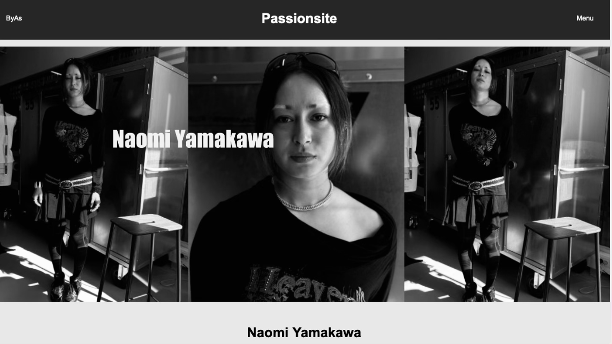
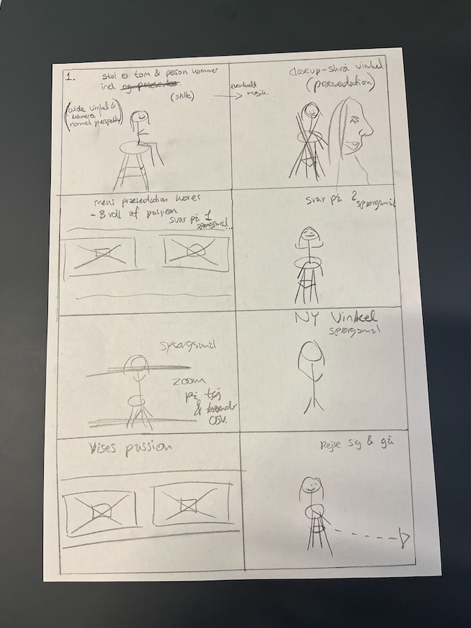
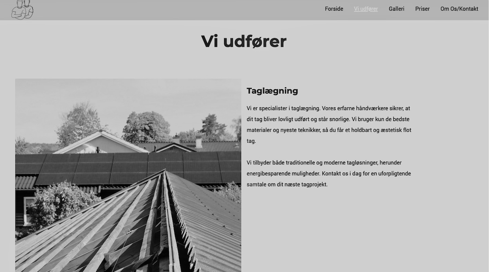
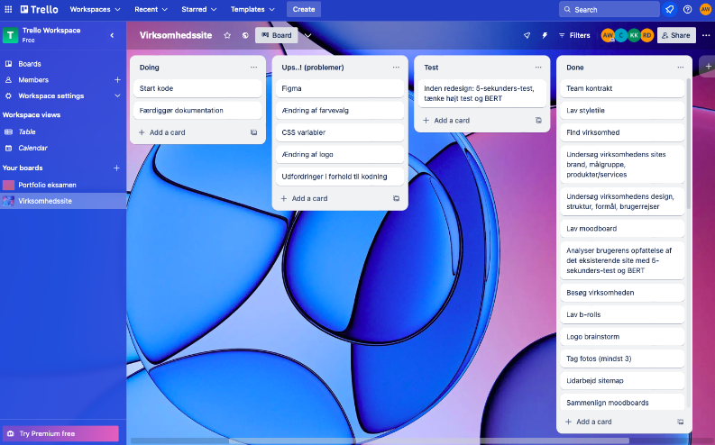

Tema 5
Grundlæggende indhold
Passionsite
Tema 5 havde til formål at give mig et grundlæggende indblik i indholdsproduktion - herunder præproduktion, selve produktion og postproduktion. Her blev jeg præsenteret for optagelse af video med ekstern lyd, Premiere Pro og Audition til redigering. Derudover blev jeg også introduceret til filformater, HTML forms/videotags i HTML, GitHub og relevante begreber inden for videoproduktion. I dette tema fik vi stillet to forskellige opgaver.
I den første opgave skulle jeg lave et "Passionsite", altså en hjemmeside omhandlende en passioneret person. Her lavede jeg et site omhandlende Naomi Yamakawa. Til denne opgave var wireframes og layoutdiagrammer udleveret, så fokusset lå primært på at implementere en video på sitet samt at blive bedre til videoredigering. Derudover prøvede jeg også kræfter med implementering og design af en lottifile.
Under denne opgave fik jeg et større kendskab til videoredigering i Premiere Pro, og jeg blev bekendt med begreber som adjustment layers, color grading, billedformater og anden relevant klippeteori.
Mit storyboard
Inden jeg gik i gang med at optage mit videointerview, lavede jeg et storyboard. Et storyboard er en skitse, som hjælper med visuelt at skitsere og planlægge scenerne, der skal indgå i produktionen. Hver skitse repræsenterer et skud, der skal tages. På disse skitser noterede jeg også, hvilke vinkler, spørgsmål og emner der skulle dækkes i de forskellige klip. Dette var en essentiel del af forarbejdet og gjorde processen med at optage videoen en hel del nemmere og mere overskuelig.
Grundlæggende indhold
Virksomhedssite
I den anden opgave arbejdede vi i grupper af fire. Her fik vi til opgave at redesigne en virksomheds nuværende hjemmeside. Det var op til os i gruppen at bestemme, hvilket redesign hjemmesiden skulle have, samt på hvilken måde vi ville implementere video.
I denne opgave blev vi introduceret til, hvordan man effektivt arbejder sammen i teams, og i den forbindelse blev vi introduceret til Scrum, Trello og GitHub, som endte med at blive en stor hjælp gennem vores projekt.
I redesign-opgaven havde jeg ansvaret for at kode undersiden "Vi udfører" samt at lave et redesign af virksomhedens logo. Derudover deltog jeg også i mødet for "Scrum of Scrums". Her havde jeg til opgave at videreformidle til de andre scrum masters i de andre grupper, hvor langt vi i vores gruppe var i vores proces, samt hvilke problemstillinger vi var løbet ind i på det givne tidspunkt.
Logo tegnet i Adobe Illustrator

Som tidligere nævnt havde jeg til ansvar at lave et redesign af virksomhedens nuværende logo. Dette var det endelige resultat af redesignet. Logoet tegnede jeg i Adobe Illustrator ved hjælp af værktøjet "Paint Brush". Jeg rentegnede logoet ud fra nogle skitser, jeg først havde lavet på papir.
Udklip fra trello board
Dette er et udklip fra vores Trello-board. Trello-boardet var en stor hjælp under vores gruppeprojekt, da det var med til at skabe overblik over, hvilke ting der manglede at blive lavet, samt hvilke ting vi var kommet i mål med. Derudover hjalp det også med, at vi kunne opretholde overblikket gennem hele projektet.
Nye kompetencer:
- Html forms og videoplatforme
- Filformater
- Introduktion til Github
- Præsentation og dokumentation
- Beskæring og colorgrading
- Premiere pro og after effects
- Storybord
- Klippeteori
- Scrum og trello